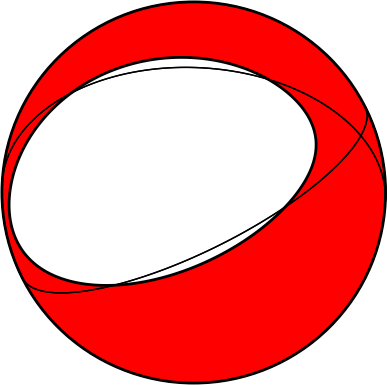
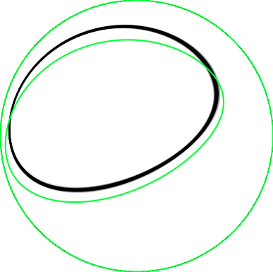
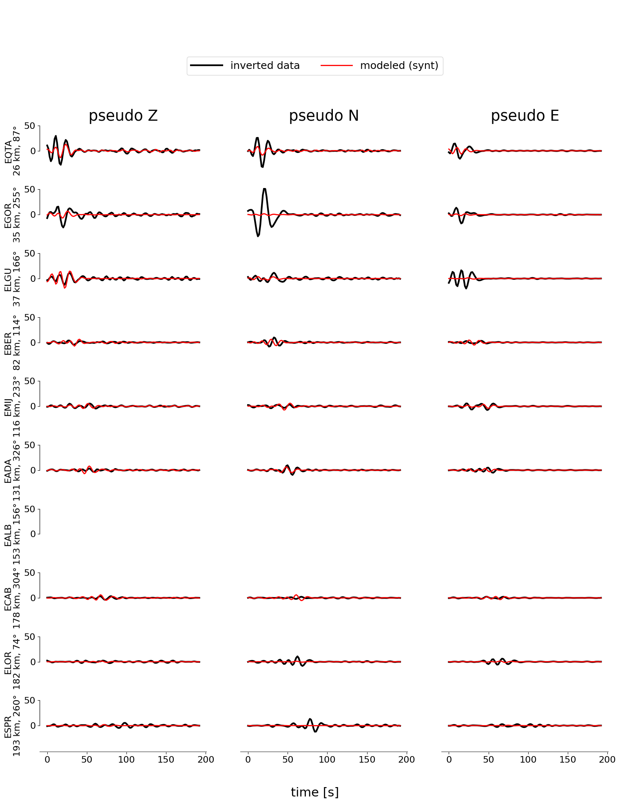
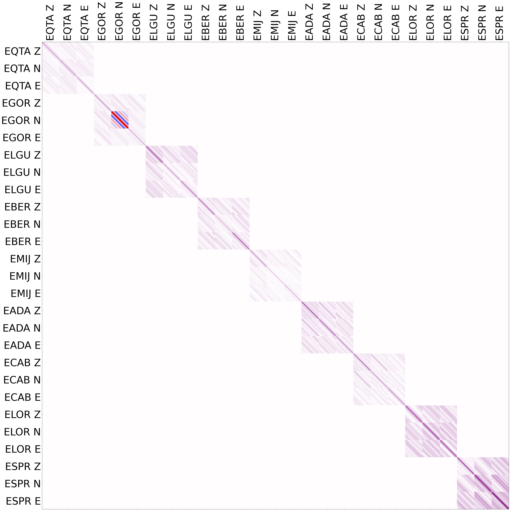
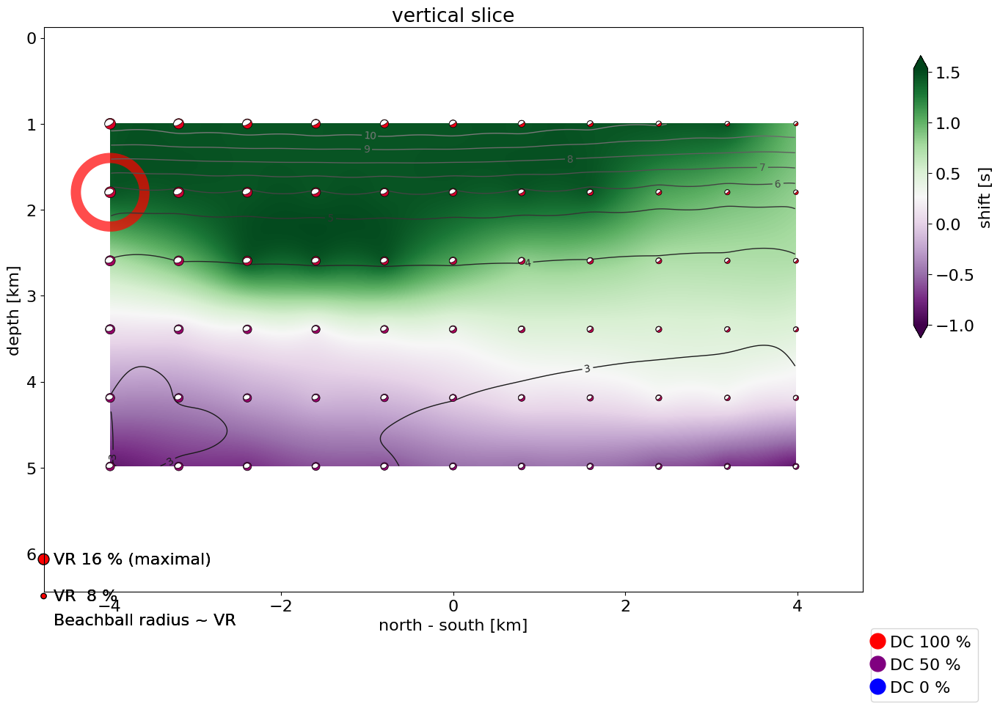
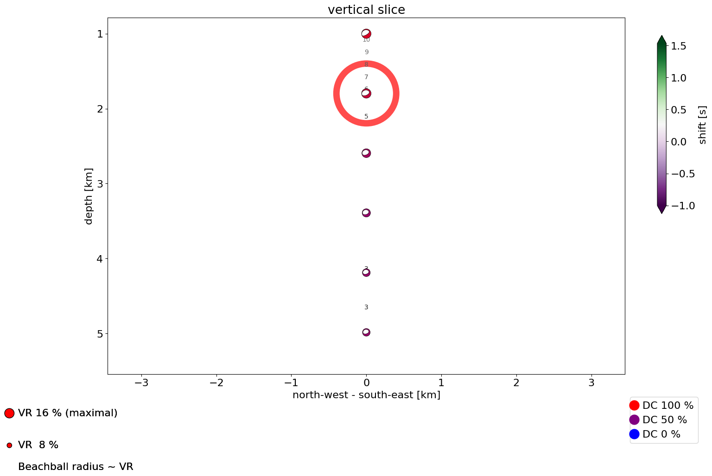
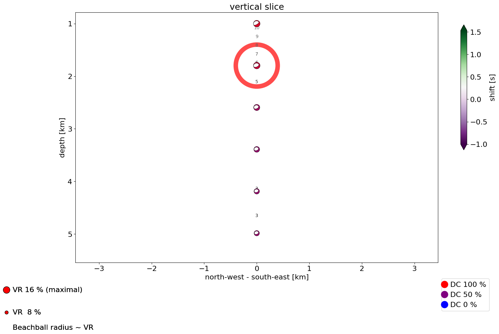

surfQuake MTI
- Method
- Waveform inversion for deviatoric part of moment tensor (5 components)
with the data covariance matrix based on real noise
with crosscovariance between components.
- Reference
- Vackář, Gallovič, Burjánek, Zahradník, and Clinton. Bayesian ISOLA: new tool for automated centroid moment tensor inversion, in preparation, PDF
Hypocenter location
- Agency
- Origin time
- 2021-01-26 21:36:33
- Latitude
- 37.195° N
- Longitude
- -3.730° E
- Depth
- 1.0 km
- Magnitude
- 4.2
Results

moment tensor best solution

moment tensor uncertainty
Centroid location
|
absolute |
relative |
| Time |
2021-01-26 21:36:34 |
1.44 s after origin time |
| Latitude |
37.231° N |
3986 m north of the epicenter |
| Longitude |
3.685° W |
3986 m east of the epicenter |
| Depth |
1.8 km |
0.8 km deeper than location |
Warning: the solution lies on the edge of the grid!
Warning: the solution lies on the edge of the time-grid!
Moment tensor and its quality
| Centroid position |
|---|
| depth | 1.8 km |
|---|
| Seismic moment |
|---|
| scalar seismic moment M0 | 1.06e+15 Nm |
|---|
| moment magnitude Mw | 4.0 |
|---|
| Moment tensor components |
|---|
| Mrr | -8.47 * 1e+14 |
|---|
| Mθθ | 7.78 * 1e+14 |
|---|
| Mϕϕ | 0.69 * 1e+14 |
|---|
| Mrθ | -4.29 * 1e+14 |
|---|
| Mrϕ | -3.90 * 1e+14 |
|---|
| Mθϕ | 1.33 * 1e+14 |
|---|
| Moment tensor decomposition |
|---|
| DC | 78 % |
|---|
| CLVD | -22 % |
|---|
| strike | 273 / 63 |
|---|
| dip | 31 / 62 |
|---|
| rake | -64 / -105 |
|---|
| Quality measures |
|---|
| condition number | 6 |
|---|
| variance reduction | 16 % |
|---|
Histograms—uncertainty of MT parameters
Histograms—uncertainty of centroid position and time
Data used
Components used in inversion and their weights
| station | component | distance * | azimuth | fmin | fmax |
|---|
| code | channel | Z | N | E | (km) | (deg) | (Hz) | (Hz) |
|---|
| ES:EQTA | HH | 1.0 | 1.0 | 1.0 | 26 | 87 | 0.04 | 0.08 |
| ES:EGOR | HH | 1.0 | 1.0 | 1.0 | 35 | 255 | 0.04 | 0.08 |
| ES:ELGU | HH | 1.0 | 1.0 | 1.0 | 37 | 166 | 0.04 | 0.08 |
| ES:EBER | HH | 1.0 | 1.0 | 1.0 | 82 | 114 | 0.04 | 0.08 |
| ES:EMIJ | HH | 1.0 | 1.0 | 1.0 | 116 | 233 | 0.04 | 0.08 |
| ES:EADA | HH | 1.0 | 1.0 | 1.0 | 131 | 326 | 0.04 | 0.08 |
| ES:EALB | HH | --- | --- | --- | 153 | 156 | 0.04 | 0.08 |
| ES:ECAB | HH | 1.0 | 1.0 | 1.0 | 178 | 304 | 0.04 | 0.08 |
| ES:ELOR | HH | 1.0 | 1.0 | 1.0 | 182 | 74 | 0.04 | 0.08 |
| ES:ESPR | HH | 1.0 | 1.0 | 1.0 | 193 | 260 | 0.04 | 0.08 |
Data source
Station coordinates: /var/folders/gj/jqdffl4j0694fbnkzr8x231h0000gn/T/tmp6a8hzhj8/stations.txt

waveform fit
(filtered)

waveform fit
(non-filtered)

data covariance matrix
Stability and uncertainty of the solution
Posterior probability density function (PPD)

PPD: north-south view
Stability in space (top view)
Stability in space (side view)

 


click to compare different points of view
Calculation parameters
Grid-search over space
- number of points
- 726
- horizontal step
- 797 m
- vertical step
- 797 m
- grid radius
- 4.326 km
- minimal depth
- 1.000 km
- maximal depth
- 5.326 km
- rupture length (estimated)
- 1.326 km
Grid-search over time
- min
- -1.00 s (-96 samples)
- max
- 1.53 s (153 samples)
- step
- 0.12 s ( 12 samples)
Green's function calculation
- Crustal model
- /Volumes/LaCie/test_surfquake/Granada/inputs/model_mti/Iberia.dat
- npts
- 128
- tl
- 199.68
- freq
- 65
- npts for inversion
- 124
- source time function
- triangle in velocity, length = 2.0 s
Sampling frequencies
- Data sampling
- 100.0 Hz, 100.0 Hz, 100.0 Hz, 100.0 Hz, 100.0 Hz, 100.0 Hz, 100.0 Hz, 100.0 Hz, 100.0 Hz, 100.0 Hz
- Common sampling
- 100.0 Hz
- Decimation factor
- 156 x
- Sampling used
- 0.6 Hz

{kind=link}
{kind=link}
{kind=link}
{kind=link}
{kind=link}
{kind=link}
{kind=link}
{kind=link}
{kind=link}
{kind=link}
{kind=link}
{kind=link}
{kind=link}
{kind=link}
{kind=link}
{kind=link}
{kind=link}
{kind=link}
{kind=link}
{kind=link}
{kind=link}
{kind=link}
{kind=link}
{kind=link}